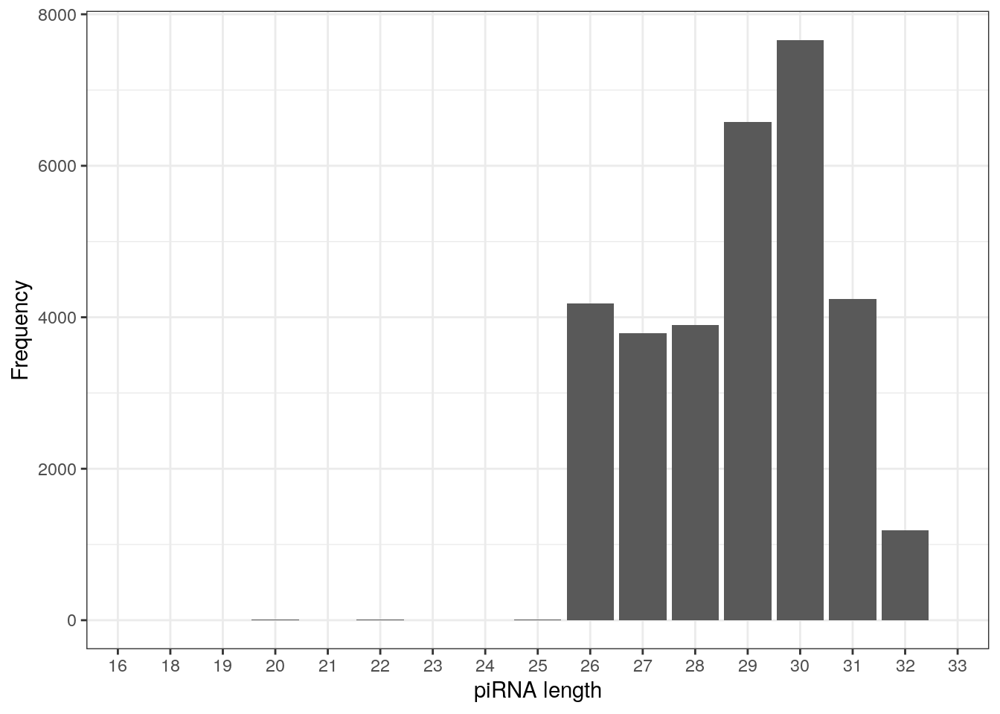
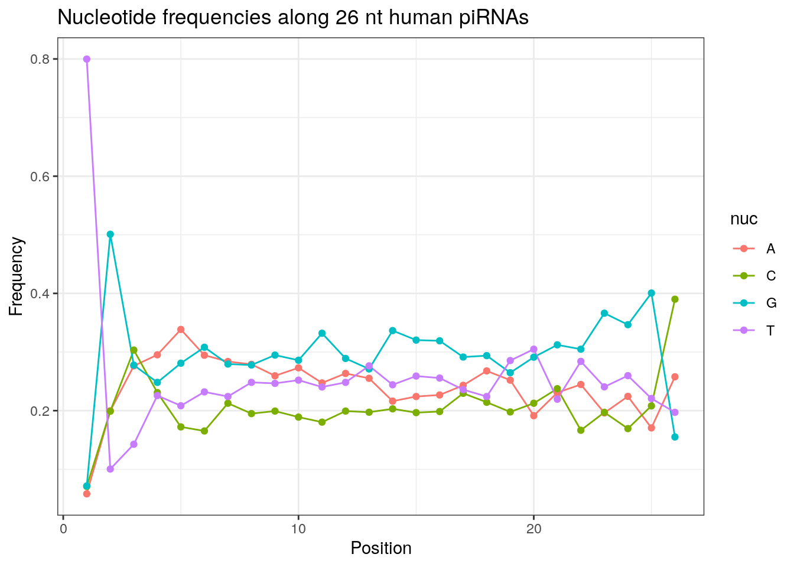
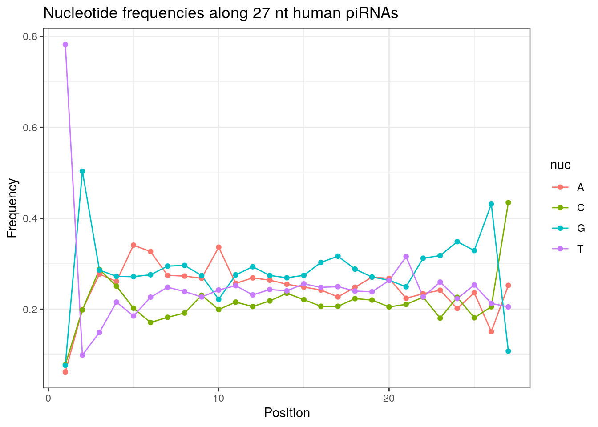
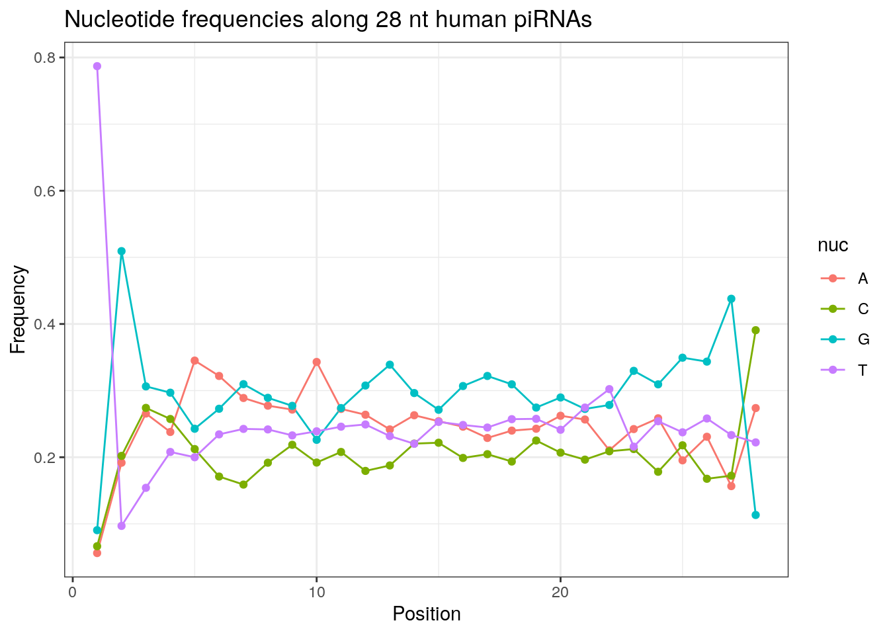
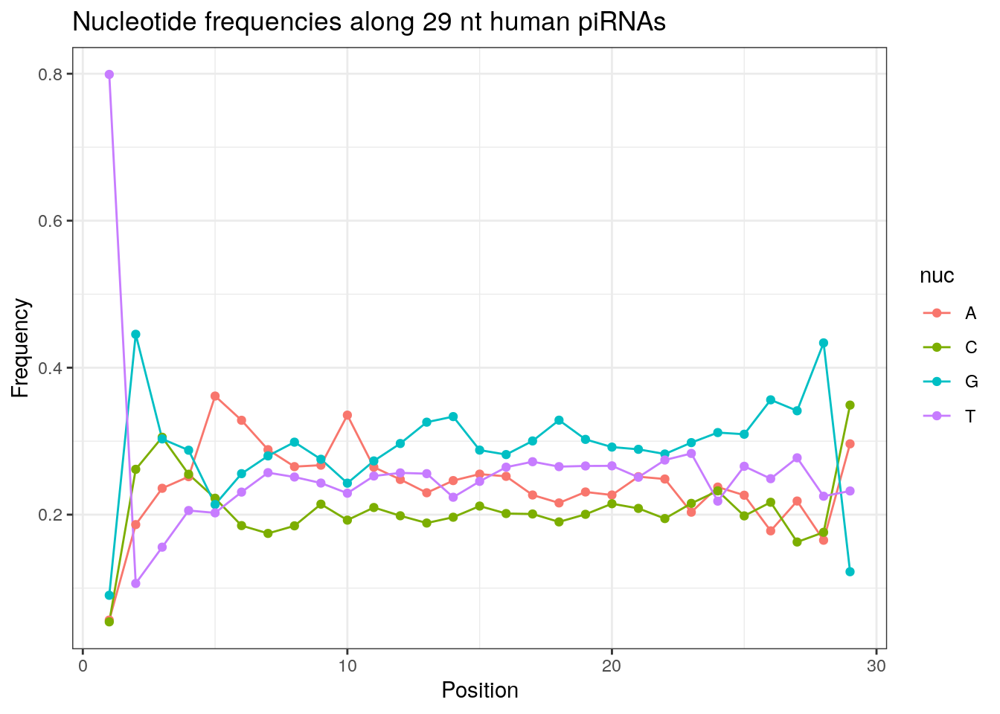
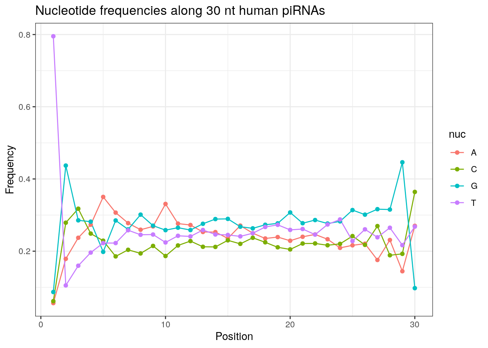
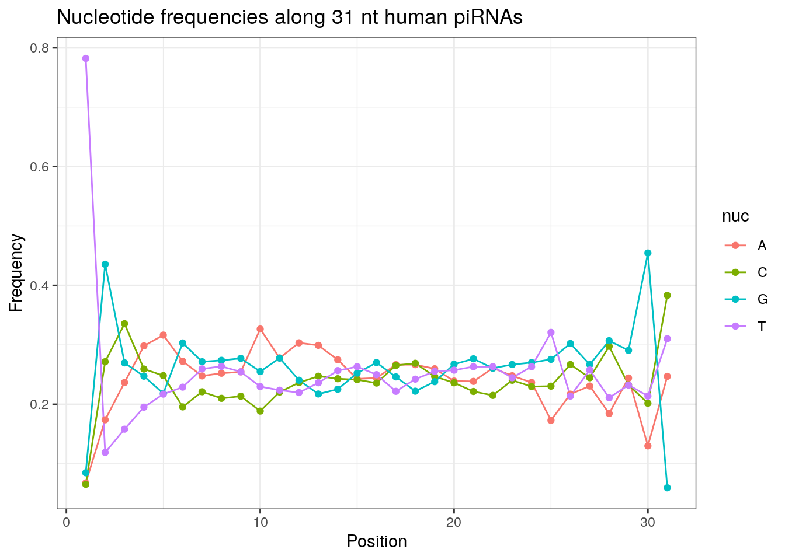
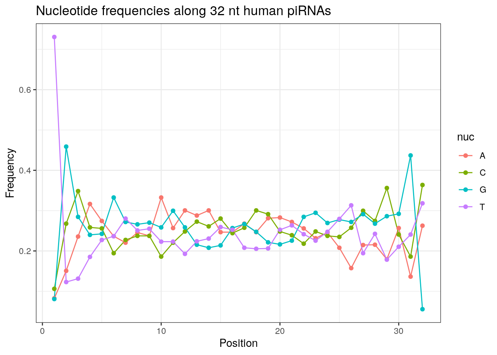

Last updated: 2022-04-28
Checks: 7 0
Knit directory: muse/
This reproducible R Markdown analysis was created with workflowr (version 1.7.0). The Checks tab describes the reproducibility checks that were applied when the results were created. The Past versions tab lists the development history.
Great! Since the R Markdown file has been committed to the Git repository, you know the exact version of the code that produced these results.
Great job! The global environment was empty. Objects defined in the global environment can affect the analysis in your R Markdown file in unknown ways. For reproduciblity it’s best to always run the code in an empty environment.
The command set.seed(20200712) was run prior to running the code in the R Markdown file. Setting a seed ensures that any results that rely on randomness, e.g. subsampling or permutations, are reproducible.
Great job! Recording the operating system, R version, and package versions is critical for reproducibility.
Nice! There were no cached chunks for this analysis, so you can be confident that you successfully produced the results during this run.
Great job! Using relative paths to the files within your workflowr project makes it easier to run your code on other machines.
Great! You are using Git for version control. Tracking code development and connecting the code version to the results is critical for reproducibility.
The results in this page were generated with repository version 2020fbe. See the Past versions tab to see a history of the changes made to the R Markdown and HTML files.
Note that you need to be careful to ensure that all relevant files for the analysis have been committed to Git prior to generating the results (you can use wflow_publish or wflow_git_commit). workflowr only checks the R Markdown file, but you know if there are other scripts or data files that it depends on. Below is the status of the Git repository when the results were generated:
Ignored files:
Ignored: .Rhistory
Ignored: .Rproj.user/
Ignored: r_packages_4.1.2/
Untracked files:
Untracked: data/ncrna_NONCODE[v3.0].fasta.tar.gz
Untracked: data/ncrna_noncode_v3.fa
Note that any generated files, e.g. HTML, png, CSS, etc., are not included in this status report because it is ok for generated content to have uncommitted changes.
These are the previous versions of the repository in which changes were made to the R Markdown (analysis/seqinr.Rmd) and HTML (docs/seqinr.html) files. If you’ve configured a remote Git repository (see ?wflow_git_remote), click on the hyperlinks in the table below to view the files as they were in that past version.
| File | Version | Author | Date | Message |
|---|---|---|---|---|
| Rmd | 2020fbe | Dave Tang | 2022-04-28 | Fix link to FASTA |
| html | b814eb1 | Dave Tang | 2022-04-28 | Build site. |
| Rmd | 9b739a1 | Dave Tang | 2022-04-28 | Using the seqinr package |
The seqinr package provides many useful functions for working with biological sequences in R. We will use data from NONCODE to demonstrate some features of seqinr.
wget 'http://www.noncode.org/datadownload/ncrna_NONCODE[v3.0].fasta.tar.gz'
tar xzf ncrna_NONCODE\[v3.0\].fasta.tar.gz
mv ncrna_NONCODE\[v3.0\].fasta ncrna_noncode_v3.fa
cat ncrna_noncode_v3.fa | grep "^>" | wc -l
411553Show last couple of entries.
cat data/ncrna_noncode_v3.fa | grep "^>" | tail -3>n424067 | GQ859162 | mRNAlike lncRNA | Homo sapiens | NEAT1 | lncRNAdb | 424067 | http://lncrnadb.com/Detail.aspx?TKeyID=105 | -1.3349500 | -0.2589092
>n424073 | AK035706 | mRNAlike lncRNA | Mus musculus | HOTAIR | lncRNAdb | 343067 | http://lncrnadb.com/Detail.aspx?TKeyID=97 | -1.4335300 | -0.2747758
Binary file (standard input) matchesInstall (if missing) and load seqinr.
if(!require("seqinr", quietly = TRUE)){
install.packages("seqinr")
}
library("seqinr")The read.fasta function is used to load a FASTA file and we will use it to load ncrna_noncode_v3.fa.
ncrna <- read.fasta("data/ncrna_noncode_v3.fa")
length(ncrna)[1] 411553The entries are saved in a list.
class(ncrna)[1] "list"Each list item is named after the first annotation in the FASTA file.
head(names(ncrna))[1] "nncid" "n1" "n2" "n3" "n4" "n5" Check the first entry, which is stored in index 2, as the first entry is a fake FASTA entry that contains some information on the annotations stored in the FASTA file.
ncrna[[2]] [1] "a" "c" "c" "t" "c" "g" "a" "c" "c" "a" "c" "c" "c" "t" "t" "a" "a" "c"
[19] "t" "t" "g" "g" "g" "t" "g" "c" "a" "g" "g" "t" "a" "t" "t" "c" "a" "a"
[37] "c" "a" "a" "a" "a" "g" "c" "a" "a" "t" "g" "a" "a" "t" "c" "a" "a" "g"
[55] "g" "a" "a" "t" "g" "a" "a" "t" "c" "a" "a" "t" "g" "g" "a" "t" "t" "t"
[73] "t" "c" "a" "a" "t" "g" "g" "a" "t" "t" "t" "a" "t" "g" "g" "a" "t" "t"
[91] "t" "t" "a" "a" "a" "a" "a" "c" "a" "g" "a" "g" "a" "a" "c" "t" "c" "a"
[109] "g" "a" "a" "a" "t" "c" "t" "a" "a" "c" "a" "g" "a" "a" "a" "t" "t" "t"
[127] "a" "a" "c" "a" "g" "a" "a" "a" "t" "t" "t" "a" "a" "a" "t" "t" "t" "g"
[145] "t" "c" "g" "a" "t" "c" "t" "a" "c" "a" "a" "a" "t" "t" "g" "c" "c" "c"
[163] "t" "t" "a" "t" "c" "t" "t" "t" "t" "t" "c" "c" "a" "t" "c" "t" "t" "a"
[181] "a" "a" "c" "t" "a" "a" "a" "c" "g" "t" "t" "a" "a" "t" "a" "a" "c" "t"
[199] "t" "a" "t" "t" "g" "t" "t" "g" "t" "t" "g" "a" "a" "t" "a" "c" "a" "g"
[217] "c" "t" "t" "g" "t" "g" "g" "a" "a" "t" "g" "t" "c" "g" "g" "g" "g" "t"
[235] "a" "c" "a" "a" "t" "g" "t" "c" "g" "g" "g" "g"
attr(,"name")
[1] "n1"
attr(,"Annot")
[1] ">n1 | AB002583 | tmRNA | chloroplast Cyanidioschyzon merolae | ssrA | NONCODE v2.0 | NULL | NULL | -1.0577600 | -0.3460597"
attr(,"class")
[1] "SeqFastadna"Count nucleotides.
count(ncrna[[2]], 1)
a c g t
86 40 44 76 Count di-nucleotides.
count(ncrna[[2]], 2)
aa ac ag at ca cc cg ct ga gc gg gt ta tc tg tt
38 15 9 24 16 7 5 12 15 4 14 10 16 14 16 30 GC percent.
GC(ncrna[[2]])[1] 0.3414634Store entire FASTA headers.
my_header <- getAnnot(ncrna)Create data frame using FASTA header.
head(my_header[-1])[[1]]
[1] ">n1 | AB002583 | tmRNA | chloroplast Cyanidioschyzon merolae | ssrA | NONCODE v2.0 | NULL | NULL | -1.0577600 | -0.3460597"
[[2]]
[1] ">n2 | AB002583 | RNase P RNA | chloroplast Cyanidioschyzon merolae | rnpB | NONCODE v2.0 | NULL | NULL | -1.1143400 | -0.4482952"
[[3]]
[1] ">n3 | AB003477 | tmRNA | Synechococcus sp | 10Sa | NONCODE v2.0 | NULL | NULL | -1.3614100 | -0.3138589"
[[4]]
[1] ">n4 | AB007644 | snoRNA | Arabidopsis thaliana (thale cress) | U3 | NONCODE v2.0 | NULL | NULL | -0.5276610 | -0.3278265"
[[5]]
[1] ">n5 | AB009049 | snoRNA | Arabidopsis thaliana (thale cress) | U24 | NONCODE v2.0 | NULL | NULL | -1.0309300 | -0.5177013"
[[6]]
[1] ">n6 | AB009051 | snRNA | Arabidopsis thaliana (thale cress) | U6 | NONCODE v2.0 | NULL | NULL | -1.3622000 | -0.1069238"my_split <- lapply(my_header[-1], function(x){
str_split(x, " \\| ", simplify = TRUE)
})
my_df <- do.call(rbind.data.frame, my_split)
names(my_df) <- as.vector(str_split(my_header[[1]], " \\| ", simplify = TRUE))
my_df %>%
rename(nncid = ">nncid") %>%
mutate(nncid = sub("^>", "", nncid)) -> my_df
head(my_df) nncid accn class organism name
1 n1 AB002583 tmRNA chloroplast Cyanidioschyzon merolae ssrA
2 n2 AB002583 RNase P RNA chloroplast Cyanidioschyzon merolae rnpB
3 n3 AB003477 tmRNA Synechococcus sp 10Sa
4 n4 AB007644 snoRNA Arabidopsis thaliana (thale cress) U3
5 n5 AB009049 snoRNA Arabidopsis thaliana (thale cress) U24
6 n6 AB009051 snRNA Arabidopsis thaliana (thale cress) U6
ref transcriptID url cpcScore cnci
1 NONCODE v2.0 NULL NULL -1.0577600 -0.3460597
2 NONCODE v2.0 NULL NULL -1.1143400 -0.4482952
3 NONCODE v2.0 NULL NULL -1.3614100 -0.3138589
4 NONCODE v2.0 NULL NULL -0.5276610 -0.3278265
5 NONCODE v2.0 NULL NULL -1.0309300 -0.5177013
6 NONCODE v2.0 NULL NULL -1.3622000 -0.1069238Organisms with the most ncRNAs.
my_df %>%
group_by(organism) %>%
summarise(tally = n()) %>%
arrange(desc(tally)) %>%
head()# A tibble: 6 × 2
organism tally
<chr> <int>
1 Mus musculus 119597
2 Drosophila melanogas 102171
3 Homo sapiens 91067
4 Norway rat 66760
5 NULL 15781
6 Caenorhabditis elegans 4718Class with the most ncRNAs.
my_df %>%
group_by(class) %>%
summarise(tally = n()) %>%
arrange(desc(tally)) %>%
head()# A tibble: 6 × 2
class tally
<chr> <int>
1 piRNA 174724
2 mature_transcript 102046
3 lncRNA 50615
4 mRNAlike lncRNA 43530
5 miRNA 20550
6 other 4192Find all human piwi-interacting RNAs (piRNAs) and store their nncid.
my_df %>%
filter(class == "piRNA", organism =="Homo sapiens") %>%
pull(nncid) -> nncid_human_pirna
length(nncid_human_pirna)[1] 32152Create pirna_human for storing human piRNAs.
pirna_human <- ncrna[nncid_human_pirna]
getSequence(pirna_human[[1]], as.string = TRUE)[[1]]
[1] "tagtgatgtgttcgttggtaagaggga"Report number of sequences with N’s and remove them.
my_n <- grepl('n', unlist(getSequence(pirna_human, as.string = TRUE)))
pirna_human <- pirna_human[!my_n]
table(my_n)my_n
FALSE TRUE
31580 572 Save pirna_human as a FASTA file (not run).
my_anno <- getAnnot(pirna_human)
my_anno <- lapply(my_anno, function(x) sub("^>", "", x))
write.fasta(sequences = pirna_human, names = my_anno, file.out = "human_pirna.fa")piRNAs typically start with U/T.
prop.table(table(sapply(pirna_human, function(x) x[1])))
a c g t
0.05984801 0.06614946 0.08429386 0.78970868 In addition, piRNAs typically have an A at the tenth base and the proportion below is slightly higher than 0.25 if we expect an equal distribution.
prop.table(table(sapply(pirna_human, function(x) x[10])))
a c g t
0.3257758 0.1906586 0.2499683 0.2335972 Length distribution of piRNAs.
table(getLength(pirna_human))
16 18 19 20 21 22 23 24 25 26 27 28 29 30 31 32
2 1 3 6 1 6 1 4 7 4186 3792 3901 6580 7662 4238 1188
33
2 piRNAs are typically 26-31 nucleotide long, as observed below.
as.data.frame(table(getLength(pirna_human))) %>%
ggplot(., aes(Var1, Freq)) +
geom_col() +
labs(x = "piRNA length", y = "Frequency") +
theme_bw()
| Version | Author | Date |
|---|---|---|
| b814eb1 | Dave Tang | 2022-04-28 |
10th base proportion for different lengths.
my_len <- 26:32
my_prop <- sapply(my_len, function(x){
wanted <- getLength(pirna_human) == x
prop.table(table(sapply(pirna_human[wanted], function(x) x[10])))
})
as.data.frame(t(my_prop), row.names = my_len) a c g t
26 0.2730530 0.1889632 0.2859532 0.2520306
27 0.3364979 0.1993671 0.2217827 0.2423523
28 0.3429890 0.1920021 0.2260959 0.2389131
29 0.3354103 0.1925532 0.2428571 0.2291793
30 0.3308536 0.1866353 0.2582877 0.2242234
31 0.3265691 0.1885323 0.2550731 0.2298254
32 0.3324916 0.1860269 0.2584175 0.2230640Frequencies of nucleotides along every position.
my_lens <- 26:32
for (my_len in my_lens){
wanted <- getLength(pirna_human) == my_len
my_seq <- getSequence(pirna_human[wanted])
my_freq <- apply(do.call(rbind, my_seq), 2, function(x) prop.table(table(x)))
as.data.frame(my_freq) %>%
mutate(nuc = c('A', 'C', 'G', 'T')) %>%
select(nuc, everything()) %>%
pivot_longer(!nuc, names_to = "Position", values_to = "Frequency") %>%
mutate(Position = as.integer(sub("^V", "", Position))) -> my_freq_df
ggplot(my_freq_df, aes(Position, Frequency, colour = nuc)) +
geom_line() +
geom_point() +
theme_bw() +
ggtitle(paste0("Nucleotide frequencies along ", my_len, " nt human piRNAs")) -> p
print(p)
}
| Version | Author | Date |
|---|---|---|
| b814eb1 | Dave Tang | 2022-04-28 |

| Version | Author | Date |
|---|---|---|
| b814eb1 | Dave Tang | 2022-04-28 |

| Version | Author | Date |
|---|---|---|
| b814eb1 | Dave Tang | 2022-04-28 |

| Version | Author | Date |
|---|---|---|
| b814eb1 | Dave Tang | 2022-04-28 |

| Version | Author | Date |
|---|---|---|
| b814eb1 | Dave Tang | 2022-04-28 |

| Version | Author | Date |
|---|---|---|
| b814eb1 | Dave Tang | 2022-04-28 |

| Version | Author | Date |
|---|---|---|
| b814eb1 | Dave Tang | 2022-04-28 |
Please refer to the seqinr manual for further information.
sessionInfo()R version 4.1.2 (2021-11-01)
Platform: x86_64-pc-linux-gnu (64-bit)
Running under: Ubuntu 20.04.3 LTS
Matrix products: default
BLAS/LAPACK: /usr/lib/x86_64-linux-gnu/openblas-pthread/libopenblasp-r0.3.8.so
locale:
[1] LC_CTYPE=en_US.UTF-8 LC_NUMERIC=C
[3] LC_TIME=en_US.UTF-8 LC_COLLATE=en_US.UTF-8
[5] LC_MONETARY=en_US.UTF-8 LC_MESSAGES=en_US.UTF-8
[7] LC_PAPER=en_US.UTF-8 LC_NAME=C
[9] LC_ADDRESS=C LC_TELEPHONE=C
[11] LC_MEASUREMENT=en_US.UTF-8 LC_IDENTIFICATION=C
attached base packages:
[1] stats graphics grDevices utils datasets methods base
other attached packages:
[1] seqinr_4.2-8 forcats_0.5.1 stringr_1.4.0 dplyr_1.0.7
[5] purrr_0.3.4 readr_2.1.1 tidyr_1.1.4 tibble_3.1.6
[9] ggplot2_3.3.5 tidyverse_1.3.1 workflowr_1.7.0
loaded via a namespace (and not attached):
[1] Rcpp_1.0.8 lubridate_1.8.0 getPass_0.2-2 ps_1.6.0
[5] assertthat_0.2.1 rprojroot_2.0.2 digest_0.6.29 utf8_1.2.2
[9] R6_2.5.1 cellranger_1.1.0 backports_1.4.1 reprex_2.0.1
[13] evaluate_0.14 highr_0.9 httr_1.4.2 pillar_1.6.5
[17] rlang_1.0.0 readxl_1.3.1 rstudioapi_0.13 whisker_0.4
[21] callr_3.7.0 jquerylib_0.1.4 rmarkdown_2.11 labeling_0.4.2
[25] munsell_0.5.0 broom_0.7.11 compiler_4.1.2 httpuv_1.6.5
[29] modelr_0.1.8 xfun_0.29 pkgconfig_2.0.3 htmltools_0.5.2
[33] tidyselect_1.1.1 fansi_1.0.2 crayon_1.4.2 tzdb_0.2.0
[37] dbplyr_2.1.1 withr_2.4.3 later_1.3.0 MASS_7.3-54
[41] grid_4.1.2 jsonlite_1.7.3 gtable_0.3.0 lifecycle_1.0.1
[45] DBI_1.1.2 git2r_0.29.0 magrittr_2.0.2 scales_1.1.1
[49] cli_3.1.1 stringi_1.7.6 farver_2.1.0 fs_1.5.2
[53] promises_1.2.0.1 xml2_1.3.3 ellipsis_0.3.2 generics_0.1.1
[57] vctrs_0.3.8 tools_4.1.2 ade4_1.7-19 glue_1.6.1
[61] hms_1.1.1 processx_3.5.2 fastmap_1.1.0 yaml_2.2.2
[65] colorspace_2.0-2 rvest_1.0.2 knitr_1.37 haven_2.4.3